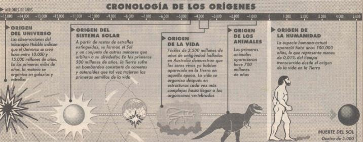

Descubiertas
por primera vez en la Tierra

CIENCIA .-Las moléculas orgánicas son la materia prima de la que están hechos los seres vivos. El hallazgo indica que las primeras semillas de la vida pudieron llegar a la Tierra en un meteorito o un cometa
BARCELONA. - Hace 1.850 millones de años, en
lo que ahora es Canadá, cayó un meteorito grande como el Everest y abrió un
boquete de 63 kilómetros de diámetro. El impacto liberó más energía que si
todas las armas nucleares que hay en la Tierra estallaran a la vez. Ahora,
tres científicos norteamericanos han descubierto junto al cráter moléculas
orgánicas de origen extraterrestre, algo que nunca antes se había hallado
en la Tierra. Puesto que las moléculas orgánicas son la materia prima de la
que están formados los seres vivos, el descubrimiento prueba que las primeras
semillas de la vida pudieron llegar a la Tierra en un meteorito o un cometa.
La mayoría de
los científicos ha creído hasta ahora que ninguna molécula orgánica compleja
--y, por extensión, ninguna forma de vida-- hubiera podido sobrevivir a un
impacto como aquél. Las moléculas descubiertas en Canadá son la prueba más
convincente hasta la fecha. a favor de, la teoría de que cuando los cometas
y los meteoritos bombardearon la Tierra en la infancia del sistema solar,
contribuyeron a la aparición de la vida al fertilizar nuestro planeta con
compuestos orgánicos vitales", ha declarado Luann Becker por correo electrónico
a "La Vanguardia".
Las moléculas
se han hallado alrededor del cráter de Sudbury, en Ontarlo (Canadá). Pertenecen
a un grupo de moléculas llamadas fulerenos. La más famosa de todas ellas tiene
la misma forma que una pelota de fútbol y se la ha llamado, por este motivo,
futbolano. Son moléculas complejas, esféricas, en cuyo interior están aprisionados
otros elementos.
Átomos
cautivos
Para estar seguros de que las moléculas eran de origen extraterrestre,
Luann Becker de la NASA, Robert Poreda de la Universidad de Rochester y Jeffrey
Bada de la Universidad de California en San Diego han analizado los átomos
aprisionados en su interior. Si los fulerenos se formaron en el momento del
impacto, los átomos de su interior deberían reflejar la composición que tenía
la atmósfera hace 1.850 millones de años. Pero si llegaron ya formados desde
el espacio, los átomos tendrían la composición de la zona del espacio en que
se formaron.
Los análisis,
presentados en la revista “Science", prueban que los fulerenos son de
origen extraterrestre: tras analizar la abundancia de dos isótopos del helio
--el exótico helio 3 y el más abundante helio 4--, los investigadores han
observado que la proporción entre ellos es similar a la que hay en los meteoritos
pero distinta a la que hay en la Tierra. Este resultado prueba que los fulerenos
son efectivamente de origen extraterrestre.
El cráter de
Canadá es posterior a la aparición de la vida en la Tierra, por lo que los
fulerenos descubiertos allí no fueron los que trajeron la vida. Tampoco está
claro que la vida apareciera a partir de fulerenos, ya que son moléculas demasiado
estables para participar en reacciones bioquímicas.”Lo que demuestra nuestra
investigación --afirma Luann Becker-- es que otras moléculas orgánicas que
sabemos que son esenciales para la vida, como los aminoácidos, también pudieron
sobrevivir al impacto de un meteorito." Por este motivo, la posibilidad
de que llegaran compuestos orgánicos a la Tierra en un asteroide o un cometa
debe ser reconsiderada".
El hallazgo reabre el debate sobre el origen de la vida
Dos teorías científicas han intentado explicar el origen de
la vida. Una, la que cuenta con más adeptos., propone que las primeras formas
de vida aparecieron espontáneamente en la Tierra unos quinientos millones
de años después de la formación del sistema solar. La otra, que moléculas
orgánicas complejas e incluso seres vivos microscópicos colonizaron la Tierra
tras llegar en cometas o asteroides. La mayoría de los científicos se han
decantado por la primera porque creían que la energía liberada en el impacto
de un meteorito o un cometa destruiría cualquier posible sernilla de vida.
Ahora, el hallazgo de las primeras moléculas orgánicas de origen extraterrestre
demuestra que la segunda teoría es viable, aunque no supone que la primera
sea inviable.
El debate, por tanto, sigue abierto.
La Vanguardia,26 de mayo de 1996